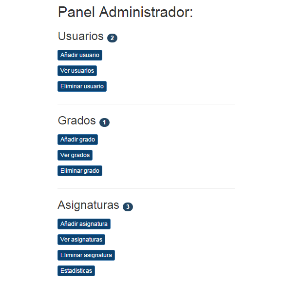

Usuarios¶
Siendo administrador, el usuario puede añadir, consultar, modificar y eliminar un usuario del sistema, sea alumno o profesor.
- Añadir usuario
- Consultar usuario
- Modificar usuario
- Eliminar usuario
Añadir usuario¶
Para añadir un nuevo usuario, el admin, desde el panel de administrador que se muestra, selecciona el botón Añadir usuario.
A continuación, el admin rellena un formulario con atributos propios de un usuario para añadir uno nuevo, tales como username, contraseña, email, nombre, apellidos, DNI e indicar si se trata de un usuario alumno o profesor y pulsa el botón Guardar.
Consultar usuario¶
Para consultar los datos de un usuario, el admin, desde el panel de administrador que se muestra, selecciona el botón Ver usuarios.
A continuación, le aparece la siguiente página donde puede ver una lista de todos los usuarios con su username y su nombre registrados en el sistema (lista paginada cada 10 usuarios). Además de un buscador, donde puede buscar el usuario por su username.
Una vez que se le muestra el usuario que quiere consultar, debe pinchar sobre el username de ese usuario y se dirigirá a una página donde se muestra toda la información relativa a ese usuario.
Modificar usuario¶
Para modificar un usuario, desde el panel del administrador, debe repetir los pasos para consultar un usuario y una vez esté en la vista de datos de usuario pulsar sobre el botón Editar <nombre de usuario>.
Se muestra un formulario con los campos correspondientes al usuario ya rellenos con la disponibilidad de cambiar los que se crean oportunos. Para modificar el usuario se pulsa en Guardar.
Atención: si se modifica un profesor, se debe volver a marcar que se trata de un profesor.
Eliminar usuario¶
Para eliminar un usuario, el admin, desde el panel de administrador que se muestra, selecciona el botón Eliminar usuario.
El sistema muestra un desplegable con todos los usuarios registrados del sistema para que el admin seleccione aquel que quiere eliminar y pulse sobre el botón eliminar.